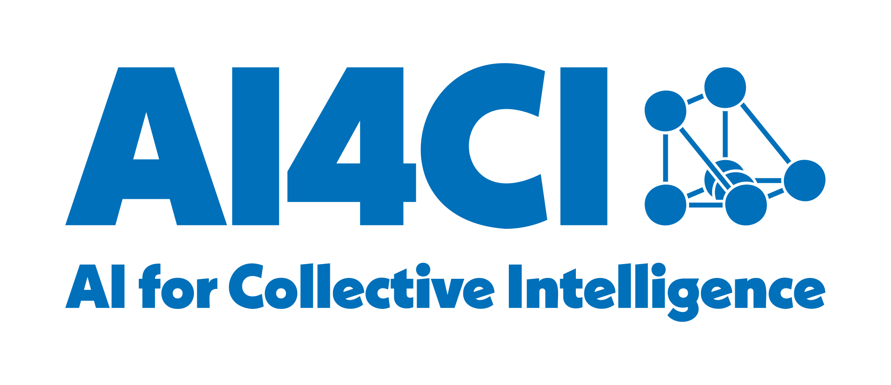

Projects
Featured research projects
City Modelling Lab (CASA / Arup)
Collaboration between Arup, UCL Bartlett Centre for Advanced Spatial Analysis, and the University of Zürich. We tackle pressing urban challenges — social inequality, transport, climate — by developing methods, data and tools that help decision makers act.
Visit site →
AI for Collective Intelligence (AI4CI)
UKRI-funded National Research Hub bringing together six universities to advance AI methods for collective intelligence problems — at scale, on real data, across cities, health, climate, environment and security. I lead the UCL branch of the Cities theme.
Visit site →GitHub projects
Auto-pulled from my GitHub account on every render: 8 live project sites across 5 categories. Code, analyses and small tools published as GitHub Pages sites.
Brighton & Hove schools

Analysis for the 2024 Brighton and Hove Secondary Schools Admissions Consultation
This analsys includes a deep dive into absence and attainment - my first efforts at this. Also lots of demographic and other analysis

Brighton Secondary and Primary Allocations Data Over Time
Applications and Offers Data Plus weeks 2 & 3 of the 2024 Engagement Exercise Work

School Attainment in England
A repo containing extensive analysis of school-level DfE data in England, exploring the drivers of attainment and containing code for a policy simulator tool as well as a deep dive into Brighton and Hove
Local government & policy

West London Alliance — High Streets Benchmarking
Quantitative benchmarking of post-COVID commercial activities across town centres in the West London Alliance boroughs.

Defibrillator coverage in Brighton & Hove
Mapping where publicly registered AEDs are, who they reach, and where additional coverage would do most good — including a Maximum Coverage Location Problem allocation.
Energy & EPC
EPC_Data_Analysis
Repository containing various analysis and presentation materials for analysing EPC data
Maps & explorers

Brighton Restaurant Awards (BRAVO) 2026 — Interactive Map
Interactive map of all BRAVO Award Category winners and rankings, 2026
Data resources & methods
Synthetic-LS-spines
Created by CALLS Hub - Source for downloading synthetic LS spines and related documentation
This page is built from a live call to the GitHub API at render time — it lists every repository under adamdennett that has GitHub Pages enabled, minus a small manual exclude list of templates and scaffolds. Categories are assigned by name in the setup chunk of projects.qmd; anything uncategorised falls into “Other”.
To override what shows up for a given repo, add a YAML front-matter block at the top of that repo’s README.md:
---
title: "A more readable project title"
description: "One-line description that will replace the GitHub repo description."
site: brighton_analysis.html # path under the Pages root (e.g. for repos without an index.html)
image: featured.png # relative path in the repo, or a full URL
type: teaching # routing: project (default) | teaching | talk | blog
---All keys are optional. If image is omitted, the first  image reference in the README body is used as a fallback.
The type key controls where a repo appears on this site:
type: project(or notypeat all): shows up in this gallery.type: teaching,type: talk, ortype: blog: hides the repo from this gallery — those belong in the matching tab in the top nav.
Rebuild the site (or wait for the daily 05:30 UTC rebuild) to refresh.